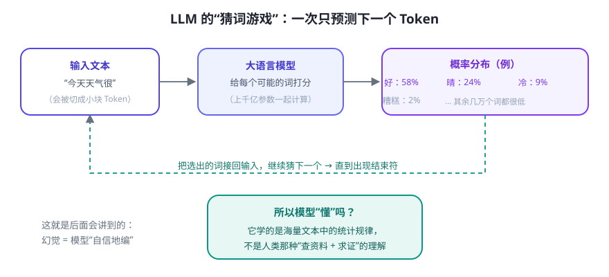
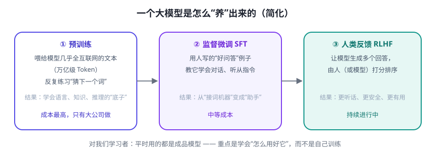

把“大语言模型”这五个字拆开：语言模型 = 学语言的模型。它学到的核心本领只有一个——预测下一个词（Token）。所有看起来“聪明”的回答，都是这个简单动作重复成千上万次拼出来的。
一次只预测一个 Token
模型并不“读”整句话，而是把文字切成小块（英文单词、中文的“字/词”都算 Token），然后逐个预测下一个最可能出现的 Token。

- Token（词元）：模型处理文字的最小单位。1 个汉字大约占 1–2 个 Token，1 个英文单词约 1 个 Token。
- 上下文窗口（Context Window）：模型一次能“看到”的文字总量（输入 + 输出）。比如 128K 窗口 ≈ 能装下一本书。超出的部分它看不到。
- 随机性：模型按概率“抽样”选词，而不是每次都选概率最高的那个，所以同一个问题答案会略有不同（温度 temperature 参数控制随机程度）。
为什么叫“大”语言模型
“大”指三样东西都很大：
| 维度 | 含义 | 通俗理解 |
|---|---|---|
| 参数多 | 几百亿到上万亿个可调参数 | 大脑的“神经元连接”非常多 |
| 数据多 | 几乎整个互联网的文本 | 读过的书/网页超乎想象 |
| 算力多 | 成千上万块 GPU 训练数月 | “学费”极高，普通人无法自训 |
一个大模型是怎么“养”出来的

💡 对学习者的启示：我们平时用的是训练好的成品模型，不需要自己训练。真正要学的是“怎么指挥它、给它配什么工具、怎么验证结果”——这正是本课程后面全部的内容。
LLM 能做什么、不能做什么
| ✅ 很擅长 | ❌ 天生做不好 |
|---|---|
| 总结、翻译、改写、润色文字 | 事实核查：会“自信地编造”（幻觉），尤其是不知名的小事 |
| 根据示例推理、写代码、头脑风暴 | 实时信息：知识有截止日期，不知道“现在”发生了什么 |
| 理解意图、多轮对话 | 精确计算：多位乘法都可能算错（它更擅长“像”而非“算准”） |
| 处理超长文本并抓重点 | 自己行动：只会输出文字，不会替你点击、查询、执行 |
注意最后一行——“只会输出文字、不能自己行动”，正是 Agent 要补上的短板。Day 3 我们来看 Agent 怎么补。
常见疑问
Q：为什么模型会一本正经地胡说八道（幻觉）？
A：因为它本质上是在“接龙”，目标是生成像样的文字，而不是查证真实的事实。应对办法：给它可靠资料（RAG，第 11 天）、让它引用来源、重要信息人工复核。
A：因为它本质上是在“接龙”，目标是生成像样的文字，而不是查证真实的事实。应对办法：给它可靠资料（RAG，第 11 天）、让它引用来源、重要信息人工复核。
Q：上下文窗口越大越好吗？
A：越大能“记住”越多，但塞太多无关内容会让它“注意力分散”、变慢变贵。工程上讲究只放有用的信息——这是后面“上下文工程”（第 9 天）的主题。
A：越大能“记住”越多，但塞太多无关内容会让它“注意力分散”、变慢变贵。工程上讲究只放有用的信息——这是后面“上下文工程”（第 9 天）的主题。
✍️ 今日练习（约 10 分钟）
- 体验“接龙”：给 AI 输入“从前有座山，山里有个”，看它怎么接；再输入“请用一句话证明你不是 AI”，感受它的“像人”程度。
- 找出幻觉：让它“介绍一本 2024 年出版、讲 AI Agent 的书，并给出作者”，然后搜索验证——大概率会发现它编了书名。记下这次体验，这就是“幻觉”。
- 感受上下文：和它聊 10 轮后，问“我们第一轮聊了什么”，再对比开新会话问同样的问题，体会“记忆”与“窗口”的区别。
- 想一想：如果让 LLM 自己去“查现在几点”“搜索今天的新闻”，它做不到——这正是 Agent 存在的理由。把它写进今天的笔记。
📌 今日小结
LLM 的本质预测下一个 Token 的“接龙大师”，重复成千上万次拼出回答
为什么强参数多 + 数据多 + 算力多，从海量文本中学到语言与知识规律
三个关键概念Token（最小单位）、上下文窗口（一次能看多少）、温度（随机程度）
核心局限会幻觉、无实时信息、算不准、不能自己行动 → 需要 Agent 来补
明天预告：Agent 怎么补上 LLM 的短板？我们学习它的四大核心部件和工作循环——这是全课程最重要的一张图。